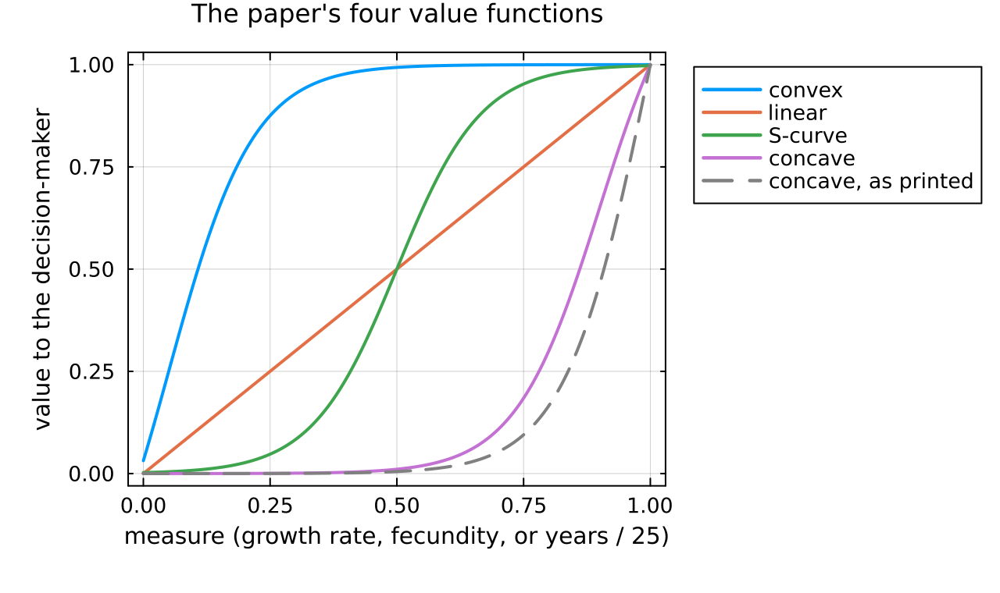

Value of information in recovery planning for a turtle (Christensen et al. 2026)
Simon Frost
- About this case study
- The paper
- In years, before any value function
- The value functions
- Magnitude or extent (ours)
- What the replication shows
About this case study
This case study replicates a published analysis. The inputs are tables printed in the paper’s supporting information, every result is shown beside the published one, and the same comparisons are in the test suite (test/fixtures/replications/christensen2026_turtle.json, test/test_replications.jl).
The paper
Christensen, McGowan and Lawson (2026), “Using value of information in recovery planning for imperiled species”, Conservation Science and Practice e70421, doi:10.1111/csp2.70421, CC BY 4.0. The inputs are Tables S4, S5 and S7 of the supporting information and the targets Table 3 of the article.
Decision. Which recovery strategy to adopt for the western analysis unit of the alligator snapping turtle (Macrochelys temminckii).
Actions. Five strategies: reduce the spatial extent of recreational bycatch and hook ingestion by 30%, of illegal collection, or of subsidised nest predation; reduce the magnitude of bycatch and hook ingestion by 30%; or head-start hatchlings. No action is the baseline.
States. Experts’ estimates of the magnitude (M) and the extent (E) of the threats may each be overestimated (1), accurate (2) or underestimated (3): nine hypotheses, weighted by a bivariate normal density (0.28 for the centre, 0.125 for an edge, 0.055 for a corner).
Outcome. Three measures from the authors’ population model, each the mean of 1,000 simulations: the population growth rate, the years added to the expected time to extirpation, and adult fecundity. The paper turns each into a decision-maker’s value between 0 and 1 with four hypothetical value functions. No cost appears in the paper. The population model is not rerun here; this vignette recomputes the value-of-information layer on its printed outputs.
using DecisionAnalysis
include(joinpath("..", "_common.jl"))
actions = [:reduce_extent_bycatch, :reduce_extent_collection, :reduce_extent_nest_predators,
:reduce_magnitude_bycatch, :head_start, :no_action]
states = [:M1E1, :M1E2, :M1E3, :M2E1, :M2E2, :M2E3, :M3E1, :M3E2, :M3E3]
weights = [55, 125, 55, 125, 280, 125, 55, 125, 55] .// 1000
# Rows = hypotheses, columns = actions. Table S4 (linear block): population growth rate.
lambda = [0.9564 0.9552 0.9523 0.9532 0.9525 0.9524; 0.9335 0.9313 0.9242 0.9255 0.9241 0.9244;
0.9069 0.9040 0.8928 0.8946 0.8929 0.8930; 0.9265 0.9247 0.9195 0.9266 0.9192 0.9193;
0.8851 0.8808 0.8676 0.8796 0.8673 0.8671; 0.8357 0.8304 0.8100 0.8283 0.8104 0.8099;
0.8834 0.8792 0.8717 0.8892 0.8714 0.8715; 0.8144 0.8062 0.7852 0.8152 0.7855 0.7852;
0.7341 0.7229 0.6921 0.7340 0.6910 0.6920]
# Table S5: years added to the expected time to extirpation.
years = [4 2 1 3 1 0; 15 11 0 2 0 0; 12 9 0 1 0 0; 10 7 0 10 0 0; 10 8 0 7 0 0;
8 6 0 5 1 0; 7 5 0 11 1 0; 7 4 0 7 0 0; 5 3 0 5 2 0]
# Table S7 (linear block): adult fecundity.
fecundity = [0.2909 0.2697 0.2778 0.2773 0.2906 0.2773; 0.2624 0.2612 0.2836 0.2707 0.2679 0.2762;
0.2600 0.2411 0.2687 0.2557 0.2650 0.2691; 0.2754 0.2746 0.2846 0.2693 0.2670 0.2710;
0.2436 0.2347 0.2643 0.2398 0.2337 0.2263; 0.1982 0.2284 0.2449 0.2161 0.2189 0.2090;
0.2365 0.2460 0.2643 0.2458 0.2527 0.2414; 0.1952 0.2085 0.2451 0.1996 0.2061 0.2069;
0.1821 0.1735 0.2083 0.1684 0.1627 0.1747]
problem(values) = DecisionProblem(PayoffTable(actions, states, permutedims(values)),
FiniteBelief(states, weights); baseline=:no_action)
problem(years).payoffPayoffTable{Int64}: 6 actions × 9 states
| action | M1E1 | M1E2 | M1E3 | M2E1 | M2E2 | M2E3 | M3E1 | M3E2 | M3E3 |
|---|---|---|---|---|---|---|---|---|---|
reduce_extent_bycatch | 4 | 15 | 12 | 10 | 10 | 8 | 7 | 7 | 5 |
reduce_extent_collection | 2 | 11 | 9 | 7 | 8 | 6 | 5 | 4 | 3 |
reduce_extent_nest_predators | 1 | 0 | 0 | 0 | 0 | 0 | 0 | 0 | 0 |
reduce_magnitude_bycatch | 3 | 2 | 1 | 10 | 7 | 5 | 11 | 7 | 5 |
head_start | 1 | 0 | 0 | 0 | 0 | 1 | 1 | 0 | 2 |
no_action | 0 | 0 | 0 | 0 | 0 | 0 | 0 | 0 | 0 |
In years, before any value function
by_years = problem(years)
md_table(["action", "expected years added (paper, Table S5)", "this package", "chosen"],
[[a, p, Float64(e), a in decide(by_years, MaxExpectedUtility()).chosen]
for (a, p, e) in zip(actions, (9.34, 6.785, 0.055, 6.06, 0.345, 0),
expected_gain_over_baseline(by_years))]; digits=3)| action | expected years added (paper, Table S5) | this package | chosen |
|---|---|---|---|
reduce_extent_bycatch | 9.34 | 9.34 | yes |
reduce_extent_collection | 6.785 | 6.785 | - |
reduce_extent_nest_predators | 0.055 | 0.055 | - |
reduce_magnitude_bycatch | 6.06 | 6.06 | - |
head_start | 0.345 | 0.345 | - |
no_action | 0 | 0 | - |
Years are counted from no action, so each entry is already a gain over the baseline. Reducing the extent of bycatch adds most, 9.34 years on average, and learning the true hypothesis first would add 0.22 years more: reducing the magnitude of bycatch is better only when the threat magnitude was underestimated and its extent overestimated.
The value functions
The paper applies four curves: V = x, and three logistic curves V = scale / (1 + exp(-12 (x - midpoint))) + shift. Growth rate and fecundity enter unscaled, and years are divided by 25.
logistic(scale, midpoint, shift) = x -> scale / (1 + exp(-12 * (x - midpoint))) + shift
curves = ["convex" => logistic(1.5, 0.05, -0.5), "linear" => identity,
"S-curve" => logistic(1.0, 0.5, 0.0), "concave" => logistic(1.3, 0.9, 0.0)]
metrics = ["growth rate" => lambda, "time to extirpation" => years ./ 25,
"fecundity" => fecundity]
table3 = [(0.9999, 0.9999, 0.0000), (0.8780, 0.8785, 0.0005), (0.9865, 0.9866, 0.0001),
(0.5768, 0.5784, 0.0016), (0.9381, 0.9422, 0.0041), (0.3736, 0.3824, 0.0088),
(0.2413, 0.2557, 0.0144), (0.0064, 0.0066, 0.0002), (0.8887, 0.8894, 0.0007),
(0.2623, 0.2631, 0.0008), (0.0557, 0.0563, 0.0006), (0.0006, 0.0006, 0.0000)]
rows, k = Vector{Any}[], 0
for (metric, values) in metrics, (curve, f) in curves
global k += 1
p = problem(f.(values))
push!(rows,
[metric, curve, first(decide(p, MaxExpectedUtility()).chosen), table3[k][1],
act_now_value(p), table3[k][2], act_now_value(p) + evpi(p), table3[k][3], evpi(p)])
end
md_table(["measure", "curve", "chosen", "paper: uncertainty", "ours", "paper: certainty",
"ours", "paper: EVPI", "ours"], rows; digits=4)| measure | curve | chosen | paper: uncertainty | ours | paper: certainty | ours | paper: EVPI | ours |
|---|---|---|---|---|---|---|---|---|
| growth rate | convex | reduce_extent_bycatch | 0.9999 | 0.9999 | 0.9999 | 0.9999 | 0 | 0 |
| growth rate | linear | reduce_extent_bycatch | 0.878 | 0.878 | 0.8785 | 0.8785 | 0.0005 | 0.0004 |
| growth rate | S-curve | reduce_extent_bycatch | 0.9865 | 0.9865 | 0.9866 | 0.9866 | 0.0001 | 0.0001 |
| growth rate | concave | reduce_extent_bycatch | 0.5768 | 0.5768 | 0.5784 | 0.5784 | 0.0016 | 0.0016 |
| time to extirpation | convex | reduce_extent_bycatch | 0.9381 | 0.9381 | 0.9422 | 0.9422 | 0.0041 | 0.0042 |
| time to extirpation | linear | reduce_extent_bycatch | 0.3736 | 0.3736 | 0.3824 | 0.3824 | 0.0088 | 0.0088 |
| time to extirpation | S-curve | reduce_extent_bycatch | 0.2413 | 0.2413 | 0.2557 | 0.2557 | 0.0144 | 0.0143 |
| time to extirpation | concave | reduce_extent_bycatch | 0.0064 | 0.0064 | 0.0066 | 0.0066 | 0.0002 | 0.0002 |
| fecundity | convex | reduce_extent_nest_predators | 0.8887 | 0.8887 | 0.8894 | 0.8894 | 0.0007 | 0.0007 |
| fecundity | linear | reduce_extent_nest_predators | 0.2623 | 0.2623 | 0.2631 | 0.2631 | 0.0008 | 0.0007 |
| fecundity | S-curve | reduce_extent_nest_predators | 0.0557 | 0.0557 | 0.0563 | 0.0563 | 0.0006 | 0.0006 |
| fecundity | concave | reduce_extent_nest_predators | 0.0006 | 0.0006 | 0.0006 | 0.0006 | 0 | 0 |
All twelve rows of Table 3 are reproduced, and the same action is chosen as in the paper: reducing the extent of bycatch for the growth rate and for the time to extirpation, and reducing the extent of nest predation for fecundity. (Under the convex curve every action has the same value of the growth rate to four decimals.)
The four curves, over the range of a measure scaled to lie between 0 and 1. The dashed line is the concave curve as the supporting information prints it (see below).
xs = 0:0.005:1
plt = Plots.plot(; xlabel="measure (growth rate, fecundity, or years / 25)",
ylabel="value to the decision-maker",
title="The paper's four value functions")
for (curve, f) in curves
Plots.plot!(plt, xs, f.(xs); label=curve)
end
Plots.plot!(plt, xs, logistic(2.0, 1.0, 0.0).(xs); label="concave, as printed",
linestyle=:dash, color=:gray)
png_figure(plt)
Three things differ from the print, and the reasons are known.
- The paper’s EVPI is the difference of the two rounded values. For the largest case, time to extirpation under the S-curve, it prints 0.0144 and 5.97%; unrounded they are 0.0143 and 5.94%.
- The concave curve as printed does not give the paper’s own tables. The supporting information prints
2 / (1 + exp(-12 (x - 1))). The concave columns of its Tables S4, S6 and S7 are instead matched, in every cell, by1.3 / (1 + exp(-12 (x - 0.9))), which is our fit and is printed nowhere. The table above uses the fitted curve; the printed one gives the following. - No action under the time to extirpation is printed as zero under every curve, though the convex and S-curves give 0.0315 and 0.0025 at zero years. No action is never best, so no value depends on it; the table above applies the curves throughout.
as_printed = problem(logistic(2.0, 1.0, 0.0).(lambda))
md_table(["growth rate, concave curve", "value under uncertainty"],
[["paper, Table 3", 0.5768], ["the curve as printed", act_now_value(as_printed)],
["the fitted curve", act_now_value(problem(logistic(1.3, 0.9, 0.0).(lambda)))]];
digits=4)| growth rate, concave curve | value under uncertainty |
|---|---|
| paper, Table 3 | 0.5768 |
| the curve as printed | 0.4125 |
| the fitted curve | 0.5768 |
Magnitude or extent (ours)
The paper values the nine hypotheses together. The same tables give the value of learning only the magnitude, or only the extent; these numbers are ours, not the paper’s.
magnitude, extent = [div(s - 1, 3) for s in 1:9], [mod1(s, 3) for s in 1:9]
rows = Vector{Any}[]
for (metric, values) in metrics[2:2], (curve, f) in curves
p = problem(f.(values))
push!(rows, [metric, curve, evppi(p, magnitude), evppi(p, extent), evpi(p)])
end
md_table(["measure", "curve", "magnitude alone", "extent alone", "both (EVPI)"], rows; digits=4)| measure | curve | magnitude alone | extent alone | both (EVPI) |
|---|---|---|---|---|
| time to extirpation | convex | 0.0042 | 0 | 0.0042 |
| time to extirpation | linear | 0.0088 | 0.0066 | 0.0088 |
| time to extirpation | S-curve | 0.0143 | 0.014 | 0.0143 |
| time to extirpation | concave | 0.0002 | 0.0002 | 0.0002 |
What the replication shows
The value of information is small throughout because one action is best under nearly every hypothesis, which is the paper’s conclusion. It also depends on the value function as much as on the biology: for the time to extirpation the same model outputs give an EVPI of 0.4% of the expected value under the convex curve and 6% under the S-curve.